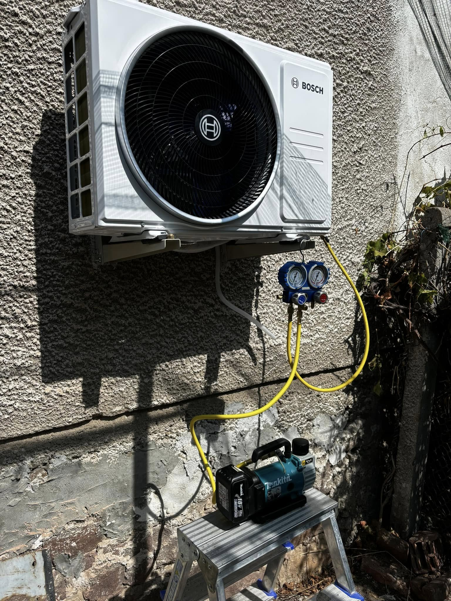
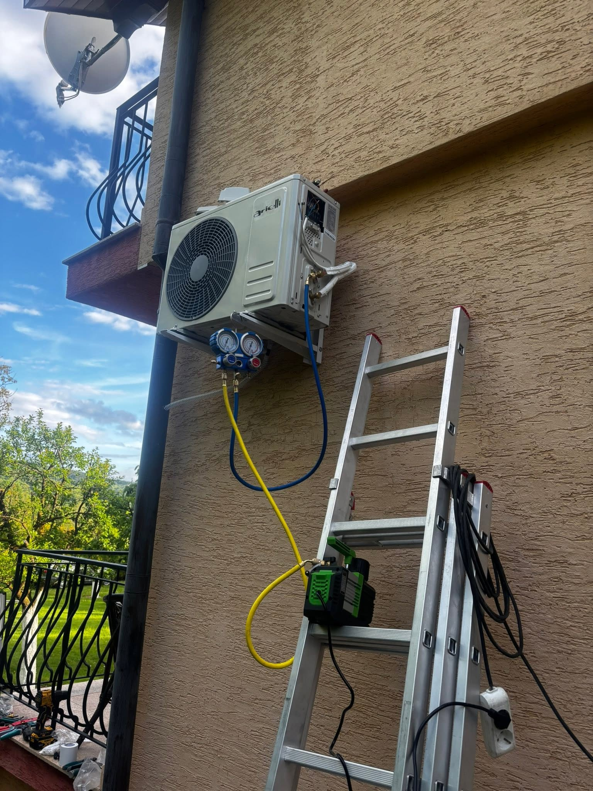
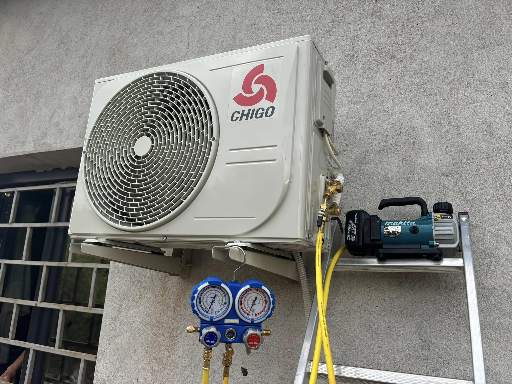
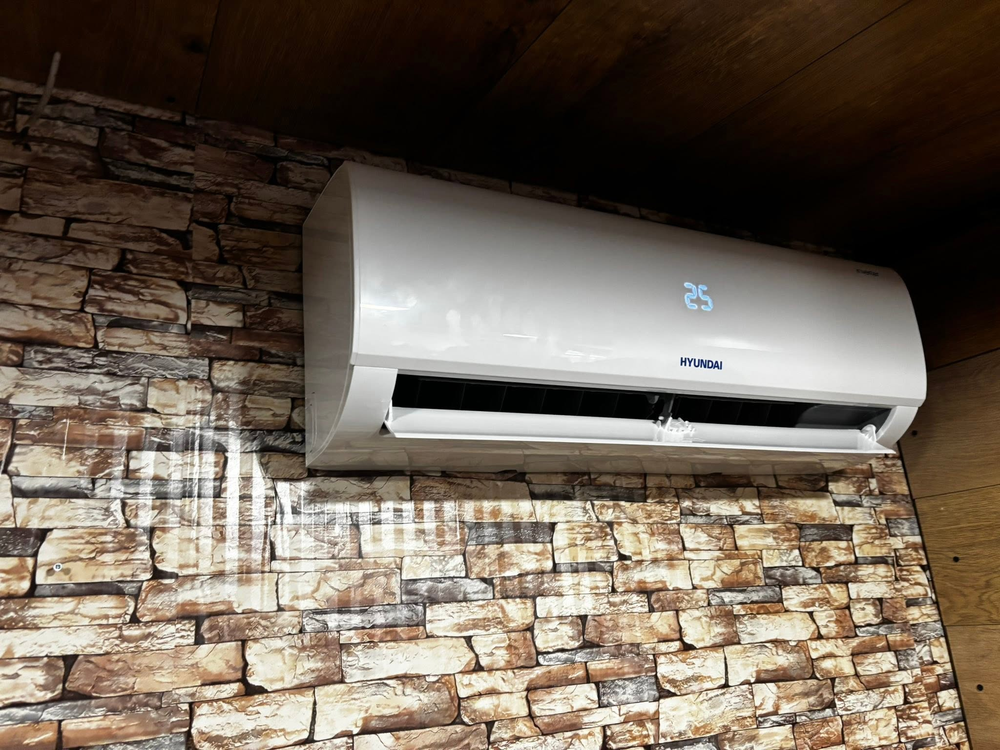

Какво включва монтажът на климатик
Базата ни е в Костинброд. Работим в София и София област — от оглед и оферта до монтаж и настройка.
Монтираме вътрешни и външни тела с внимание към отвода, шума и вида на трасето. Работим с утвърдени марки и казваме честно какво е подходящо за помещението след кратък оглед.
Доставяме и монтираме климатици с вакуумиране и пускане. Водим чисти трасета и отвод.
Помагаме с избор на мощност според помещението — без да налагаме ненужно скъп модел.
- Доставка и монтаж на климатици
- Монтаж на вътрешни и външни тела
- Вакуумиране и пускане
- Утвърдени марки
Монтаж климатик — ориентир
Стандартен монтаж на сплит често е около 150–350 лв — според трасето и достъпа. Уредът е отделно. Точна оферта след оглед на мястото за вътрешно и външно тяло.
Какво не е включено / уточняваме честно: Не монтираме без нормален достъп до фасада или балкон. Гаранционният сервиз следва правилата на производителя.
Място, монтаж, вакуум, пускане
Оглед
Място за вътрешно/външно тяло и трасе.
Доставка
Техниката на обекта.
Монтаж
Монтаж, вакуумиране, пускане.
Инструктаж
Как да ползвате системата ефективно.
Къде монтираме климатици
Климатици доставяме и монтираме в София, Костинброд и населените места в София област.
Подробности по населени места ↓
Монтажи на климатици



Въпроси за климатици
Какъв е ценовият ориентир за монтаж климатик?
Стандартен монтаж на сплит често е около 150–350 лв — според трасето и достъпа. Уредът е отделно. Точна оферта след оглед на мястото за вътрешно и външно тяло.
Само монтаж или и доставка?
И двете — според нуждата. Огледът решава мястото на телата и дължината на трасето.
Обслужвате ли Банкя и Нови Искър?
Да — както и София, Костинброд, Сливница, Драгоман, Годеч, Божурище, Своге и Елин Пелин.
На какъв телефон да се обадя?
0886 391 729